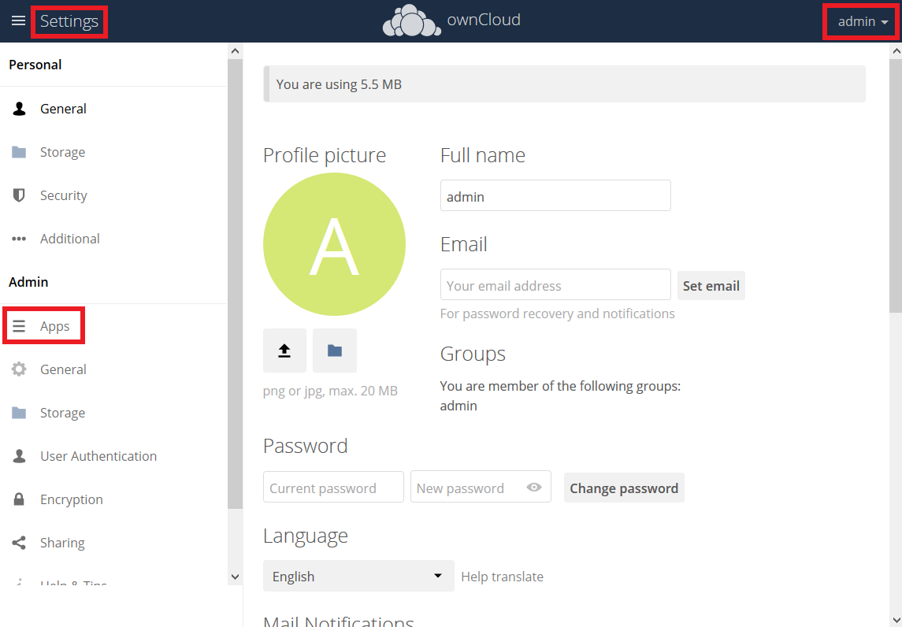

Installing and Managing Apps¶
After installing ownCloud, you may provide added functionality by installing applications.
Supported Apps¶
See Supported Apps in ownCloud for a list of supported Enterprise edition apps.
Viewing Enabled Apps¶
During the ownCloud installation, some apps are installed and enabled by default, and some are able to be installed and enabled later on. To see the status of your installation’s applications, go to your Apps page.

There, you will see which apps are currently: enabled, not enabled, and recommended. You’ll also see additional filters, such as Multimedia, Productivity, and Tool for finding more apps quickly.
Managing Apps¶
In the Apps page, you can enable or disable applications.
Some apps have configurable options on the Apps page, such as Enable only for specific groups, but mainly they are enabled or disabled here and are configured on
your ownCloud Admin page, Personal page, or in config.php.
Adding Apps¶
Click the app name to view a description of the app and any of the app settings in the Application View field. Clicking the Install button installs the app. If the app is not part of your ownCloud installation, it will be downloaded from the ownCloud Marketplace, installed, and enabled.
Sometimes the installation of a third-party app fails silently, possibly because 'appcodechecker' => true, is enabled in config.php.
When appcodechecker is enabled it checks if third-party apps are using the private API, rather than the public API.
If they are, then they will not be installed.
Note
If you would like to create or add your own ownCloud app, please refer to the developer manual.
Using Custom App Directories¶
There are several reasons for using custom app directories instead of ownCloud’s default. These are:
- It separates ownCloud’s core apps from user or admin downloaded apps. Doing so distinguishes which apps are core and which aren’t, simplifying upgrades.
- It eases manual upgrades. Downloaded apps must be manually copied. Having them in a separate directory makes it simpler to manage.
- ownCloud may gain new core apps in newer versions. Doing so orphans deprecated apps, but doesn’t remove them.
If you want to store apps in a custom directory, instead of ownCloud’s default (/app), you need to modify the apps_paths element in config/config.php.
There, you need to add a new associative array that contains three elements.
These are:
path: The absolute file system path to the custom app folder.url: The request path to that folder relative to the ownCloud web root, prefixed with/.writable: Whether users can install apps in that folder. After the configuration is added, new apps will only install in a directory wherewritableis set totrue.
The configuration example below shows how to add a second directory, called apps-external.
<?php
$CONFIG = [
'apps_paths' => [
[
'path' => OC::$SERVERROOT.'/apps',
'url' => '/apps',
'writable' => false,
],
[
'path' => OC::$SERVERROOT.'/apps-external',
'url' => '/apps-external',
'writable' => true,
],
],
// remainder of the configuration
];
After you add a new directory configuration, you can then move apps from the original app directory to the new one. To do so, follow these steps:
- Enable maintenance mode.
- Disable the apps that you want to move.
- Create a new apps directory and assign it the same user and group, and ownership permissions as the core apps directory.
- Move the apps from the old apps directory to the new apps directory.
- Add a new app directory in
config/config.php. - If you’re using a cache, such as Redis or Memcached, ensure that you clear the cache.
- Re-enable the apps.
- Disable maintenance mode.
Manually Installing Apps¶
To install an app manually instead of by using the Marketplace, copy the app either into ownCloud’s default app folder (</path/to/owncloud>/apps) or a custom app folder.
Be aware that the name of the app and its folder name must be identical!
You can find these details in the application’s metadata file, located in <app directory>/appinfo/info.xml.
Using the example below, both the app’s name and directory name would be yourappname.
<?xml version="1.0"?>
<info>
<id>yourappname</id>
<name>Your App</name>
<version>1.0</version>
</info>